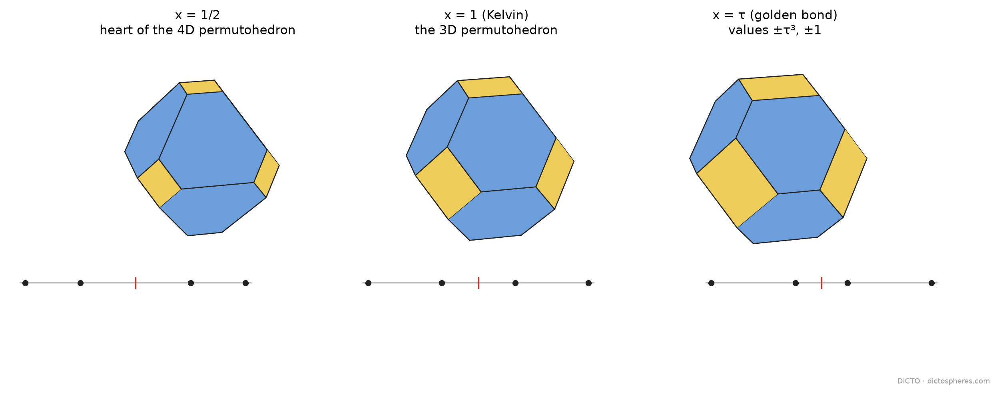

The 24 orders of 1, 2, 3, 4 are the corners of Kelvin's truncated octahedron. Space the four values differently and the corners move, but the solid keeps its 6 four-sided faces and 8 hexagons (Chapter 1). Most spacings break its symmetry. This chapter shows which spacings keep all of it, and that those are exactly the solids of DICTONIC's golden loop.
Proof. Permuting the four coordinates maps the set of orders to itself: 24 symmetries. The solid is a truncated octahedron combinatorially, whose combinatorial symmetries number 48, so there are 24 or 48. A group of 48 orthogonal maps containing the tetrahedral group is the full octahedral group, which contains the central inversion x ↦ −x (mean at the origin); so all 48 occur exactly when the inversion is a symmetry, that is, when −v₁, …, −v₄ are again v₁, …, v₄: the values are symmetric about their mean. ∎ (Checked by computing the full symmetry group of the corners for four symmetric and three non-symmetric spacings: symmetry.py.)
Proof. The filling is #48, Theorem 4; the identification of #48's T(x) with the permutohedron of gaps x : 1 : x is #105, Theorem 4; the uniqueness is #93, Theorem A, where T(x) and T(1/x) are Pμ and Qμ with μ = 1 + x/(1 + x) (#90, Proposition 6). ∎

| x | T(x) | partner T(1/x) | source |
|---|---|---|---|
| → 0 | the octahedron | the cuboctahedron | #48; #53, Corollary 1 |
| 1/2 | DICTO 1:2 Truncated Octahedron (values 1, 2, 4, 5) | DICTO 2:1 Truncated Octahedron | #105 |
| 1 | Kelvin's truncated octahedron (1, 2, 3, 4) | itself | #48 |
| τ | Icosaxes (−τ³, −1, 1, τ³) | Unborn Axes | #48 |
This is why the loop runs only through symmetric spacings: each site of the two cube lattices in Theorem 2.2 has all 48 symmetries of the cube, so its cell must have them too, and by Proposition 2.1 that forces the values to be symmetric about their mean. Chapter 3 shows that the weight between the two kinds of site measures the spacing itself.
DICTO: #48 The Golden Split (Theorem 4); #53 The Global Web of Bonds (Corollary 1); #90 Golden on the Octahedron, Silver on the Cube (Proposition 6); #93 One Double Pyramid, Two Splits (Theorem A); #105 DICTO 1:2 Truncated Octahedron: The 4D Vacuus of the Permutohedron (Theorem 4, Figure 5). M. Koca, N. O. Koca, M. Al-Mukhaini and A. Al-Qanobi, arXiv:1506.04600 (2015), eq. 49 (T(x)); W. Thomson (Lord Kelvin), Phil. Mag. (5) 24 (1887) 503–514. The filling and its uniqueness are #48's and #93's; the reading of the loop as the symmetric spacings of four values is this book's.
Further reading. P. H. Schoute, Analytic treatment of the polytopes regularly derived from the regular polytopes, Verhandelingen der Koninklijke Akademie van Wetenschappen te Amsterdam 11 (1911), no. 3 · G. M. Ziegler, Lectures on Polytopes, Graduate Texts in Mathematics 152, Springer (1995), doi:10.1007/978-1-4613-8431-1 · A. Postnikov, Permutohedra, associahedra, and beyond, Int. Math. Res. Not. 2009 (2009) 1026–1106, doi:10.1093/imrn/rnn153 · H. S. M. Coxeter, Regular Polytopes, 3rd ed., Dover (1973). Each DOI checked against its publisher's record (Crossref, 11 November 2026).